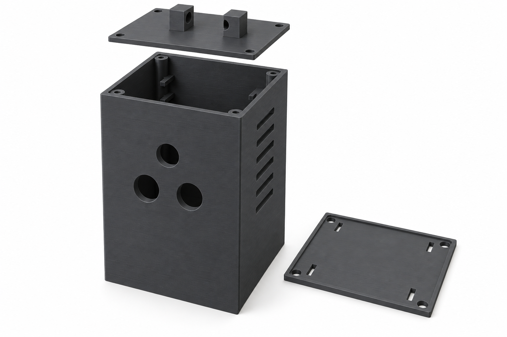
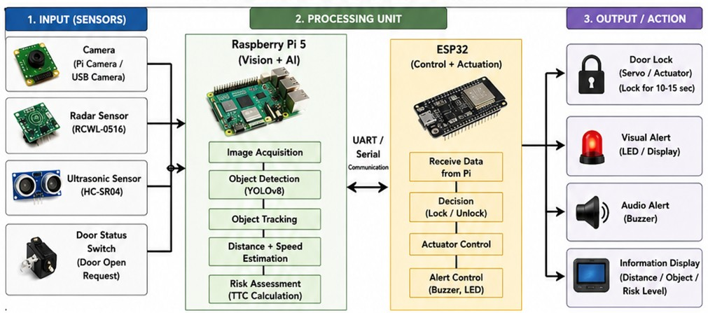

Camera
A Pi Camera or USB camera supplies images for YOLOv8 road-user detection and tracking on the Raspberry Pi 5.
COSIMA stands for Competition of Students in Microsystems Applications. Student teams develop new uses for sensors and microsystems and present a functional prototype. VigiLent explores an intelligent anti-dooring safety system that combines sensing, risk assessment and a coordinated warning and model-door response.
COSIMA is organized by VDE with funding from Germany’s Federal Ministry of Research, Technology and Space. The 2026 competition takes place on 12–13 November at electronica in Munich. About the COSIMA competition ↗
VigiLent is a retrofit vehicle-door safety concept that detects approaching road users, evaluates the relevant door, intervenes when opening may be unsafe, and records the event for authenticated review.
The exhibition design brings sensing, processing and warning control together in a retrofit enclosure.

The prototype architecture combines a camera, radar input and ultrasonic distance sensing. A Raspberry Pi 5 handles perception and approach assessment; an ESP32 coordinates the warnings and model-door servo.
The demonstration uses a stationary model. During an assessed hazard, an external light warns the passing cyclist, a buzzer alerts the occupant, and a servo temporarily restricts the model door. After clearance, the model door releases and monitoring continues.
See how it works →The supplied system architecture connects four inputs to perception, risk assessment and coordinated actuation.
A Pi Camera or USB camera supplies images for YOLOv8 road-user detection and tracking on the Raspberry Pi 5.
Provides motion-detection input alongside the camera. Camera recognition and ultrasonic distance sensing contribute complementary information.
Measures near-field distance to nearby obstacles, contributing proximity information to the system’s risk assessment.
Detects the occupant’s request to open the door, providing the trigger for evaluating a door-opening situation.
The proposed processing chain includes image acquisition, YOLOv8 detection, object tracking, distance and speed estimation, and time-to-collision risk assessment.
Receives data from the Raspberry Pi over UART/serial, makes the lock/release decision and coordinates the servo, visual alert and buzzer.
A controlled demonstration of the chain from an approaching road user to temporary model-door restriction.
A road user approaches the monitored area. The camera, radar and ultrasonic inputs supply complementary information.
The Raspberry Pi evaluates approach and door-zone risk. The ESP32 receives the processed data over UART/serial and coordinates the response to the opening request.
An external light draws the cyclist’s attention to the conflict while a buzzer alerts the vehicle occupant.
The servo temporarily restricts the stationary model door while the assessed hazard remains active.
After assessed clearance, the warning resets, the model door releases and monitoring continues.

A focused safety layer connecting sensing, door-control logic and a mobile interface—built as a functional prototype for the COSIMA competition.
External sensing observes the area beside the vehicle for cyclists, scooters, vehicles and other relevant moving objects.
When the system identifies a potentially hazardous situation, it can temporarily prevent the relevant door from opening into that path.
Detection and intervention events can be recorded for the responsible authenticated user to review through the VigiLent app concept.
The concept combines microsystem sensing, decision logic, a door-control interface and connected event visibility. Automatic safety intervention is the normal state; a manual release is treated as a deliberate authenticated override.
Rather than making the idea dependent on a completely new vehicle platform, VigiLent explores how additional sensing and connected control could be retrofitted.
We welcome technical questions and constructive feedback from COSIMA participants, jury members, researchers and industry visitors.
Get in touch with the team or follow our updates on LinkedIn.
vigilent.technology@gmail.com